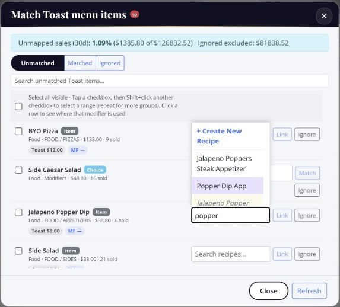

POS integration for recipe costing
Connect your point of sale and MenuForge pulls in your menu and sales. Match each POS item and modifier to a costed recipe once, and see what every item sold against what it costs to make. Toast is live today, and more POS systems are on the way. POS integration is included on the AI+ and Unlimited plans, and in the free trial.
Match every POS item to a recipe
Your POS knows what sold. MenuForge knows what it costs. The match is what connects them.
- Search and link. Start typing in the recipe box next to any POS item and pick the recipe it belongs to. MenuForge suggests likely matches by name.
- Create a recipe on the spot. If the dish is not in MenuForge yet, create it right from the match list.
- Ignore what you do not cost. Gift cards, service charges, and open items can be ignored so they stop showing up.
- Work in bulk. Select a range of items at once and ignore or restore them together.
- Know what is left. The match screen shows how much of your last 30 days of sales is still unmapped, so you know when you are done.

What the integration gives you
- Menu sync. POS menu items and modifier choices come into MenuForge, ready to match.
- Modifier costing. Link choices like “add bacon” or “sub a gluten-free bun” to the recipe or ingredient they add, so a modifier’s cost is counted.
- Sales against cost. Units sold per item next to plate cost, so you see which dishes make money and which only make volume.
- Menu engineering. Sales volume and margin side by side to find the items that carry the menu and the ones that drag it.

Supported POS systems
| POS | Status | What syncs |
|---|---|---|
| Toast | Live | Menus, modifiers, and orders (nightly, or on demand) |
| Other POS systems | On the roadmap | Tell us which POS you use and we will prioritize it |
Each MenuForge account connects to one POS location.
What it does not do
- MenuForge reads from your POS. It does not push menu or price changes back to it.
- It is not a POS replacement or a back-office accounting suite. Toast users comparing options can see MenuForge vs xtraCHEF.
No POS? No problem
Recipe costing, invoice processing, and AI work without any POS. The integration adds the sales side when you are ready. See all integrations.
Questions
Which POS systems does MenuForge integrate with?
Toast is live today. More POS systems are on the way, and you can tell us which one you need so we can prioritize it.
Which plans include POS integration?
AI+ and Unlimited, plus the 7-day free trial.
How do I match POS items to recipes?
MenuForge pulls your POS menu and suggests a recipe for each item. Search and link the right recipe, create a new one on the spot, or ignore items you do not cost, like gift cards.
How often do POS sales sync?
Toast orders sync nightly, and you can run a sync on demand.
Do I need a POS to use MenuForge?
No. Recipe costing, invoice processing, and AI work without any POS. The POS integration adds the sales side.
Cost your menu with real pack prices
A fully loaded 7-day free trial of AI+. No credit card. 10 receipts and 5 AI recipes included.
Start 7-day free trial